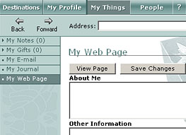

My Web Page
In Desktop World, you can create your own personal web page for other members to see. My Web Page is located on the My Things menu.

Your web page is place where you can express yourself by sharing photos and graphics, favorite web sites and other things you'd like members to know about you.
You can also see other members' web sites by clicking the members name and clicking View Web Page.
To create your web page
- Click the My Things tab.
The My Things menu appears with the My Notes submenu open by default.
- Click My Web Page.
The web page creation tool appears in the Web pane.
- Type information about yourself in the About Me and Other Information text boxes.
- You can elect to let others see your hotmail address on your web page by clicking Display my hotmail address.
Note: You will need to enter your hotmail address in My Details first.
- Click View Page to preview what you have done.
- Close the web page to get back to the web page tool.
- Click Save Chages so that other members can see your web page.
Note: you will need to save your changes anytime you change the text on your web page.
To add a picture to your web page
- To include a picture, click Upload a new picture.
This will launch a dialogue box where you can browse pictures available on your PC.
Note: you can only upload gif and jpeg file formats.
- You can add a caption under your picture by typing into the caption box.
- Click Save Changes at the top of the page.
- Click View Page to preview how it looks.
- You can remove or change your picture at anytime by clicking Delete picture and uploading a new picture.
To add favorite web links
- Type the name of your favorite web link. Example: Yahoo!
- Enter the full web address of the web link. Example: http://www.yahoo.com
- You can share up to four favorite web links.
- Click Save Changes at the top of the page.
- Click View Page to preview how it looks.
To create a picture album
- Scroll down to the bottom of the page where you will find My Picture Album
- Click Upload picture 1 and click Browse to select the picure you want to add.
- Click OK.
- Type your caption in the text area.
- You can add up to four pictures in your album.
- This pictures will appear at the bottom of your web page.
See also